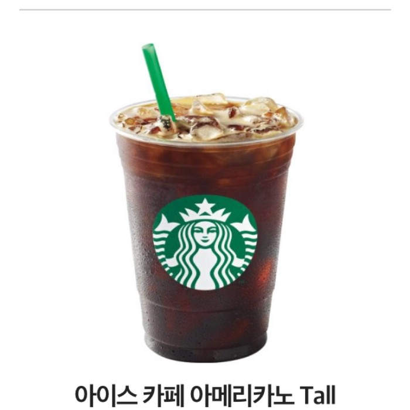
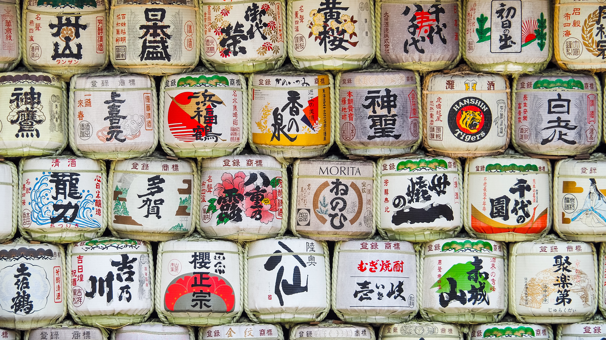

희재의 입맛
- 먹을 것
- 마실 것
- 어울리는 것
마실 것
호로록 꼴깍!
스타벅스 아메리카노
스타벅스(영어: Starbucks Corporation)는 세계에서 가장 큰 다국적 커피 전문점이다. 64개국에서 총 23,187개의 매점을 운영하고 있다. 나라별로 미국에서 12,973개, 중국에 1,897개, 캐나다에 1,550개, 일본에는 1,088개, 영국에는 927개, 대한민국에 1,000개, 멕시코에 356개, 타이완에 276개 등을 운영하고 있다.
이 세상의 커피는 스벅과 비스벅으로 나뉘지 껄껄

사케
일본어로 ‘사케’(酒)는 일반적인 ‘술’을 뜻하는 낱말이다. 한국 등에서 흔히 ‘사케’라 불리는 일본식 청주는 일본에서는 니혼슈(일본어: 日本酒, 한국 한자음: 일본주) 또는 세이슈(일본어: 清酒, 한국 한자음: 청주)라 불린다.
한국에서는 정종(正宗, 일본어: 正宗 마사무네)으로도 부르는데, 이는 사쿠라마사무네(櫻正宗)라는 양조 회사에서 만든 사케의 상품명이 대중적으로 쓰이게 된 것이다.
따뜻한 것 차가운 것 둘다 죠앙!
